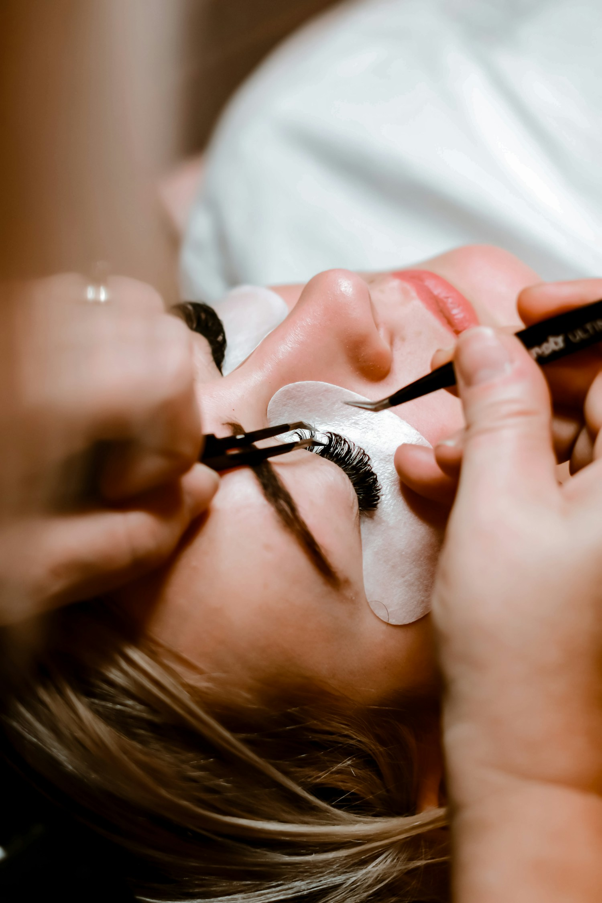
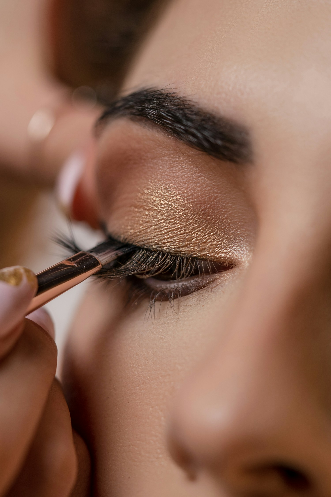
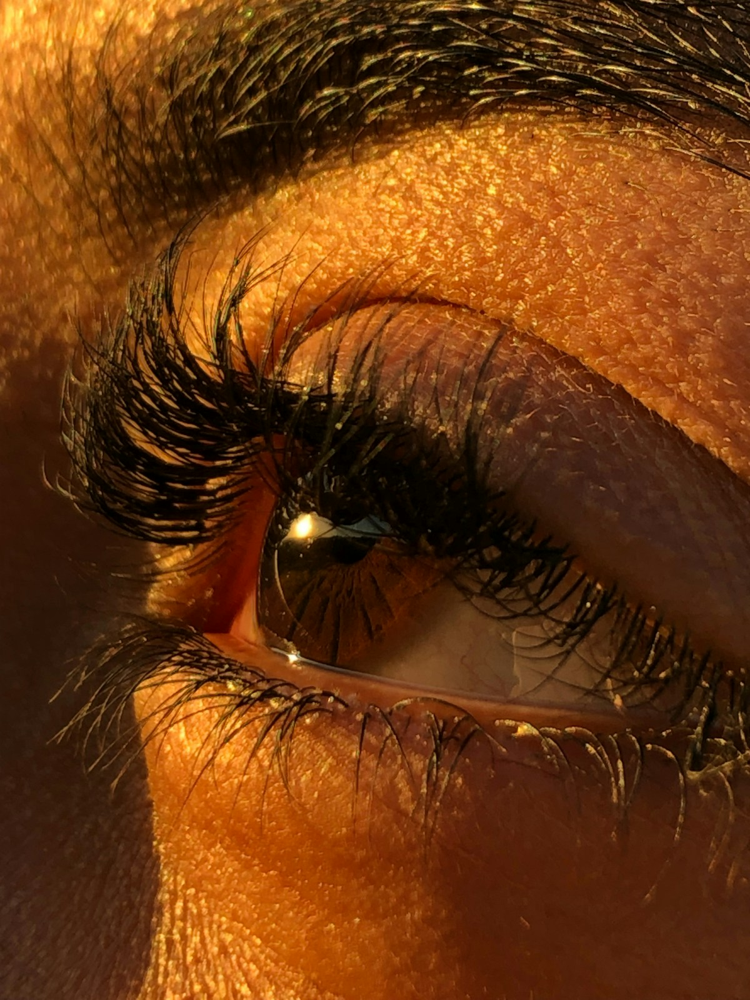

Beauty Studio · Heilbronn
Schönheit, die sich nach dir anfühlt.
Wimpernverlängerung und Permanent Make-up mit viel Liebe zum Detail — von Yana Finoshkina.



Wimpernverlängerung
Ein wacher Blick. Ganz ohne Mascara.
Symbolfoto
Hallo, ich bin Yana
Schönheit ist persönlich. Meine Arbeit auch.
Ich bin seit 6 Jahren selbstständig und ausgebildete Wimpernverlängerungs- und Permanent Make-up Artistin. Ich lege jeden Tag meine ganze Liebe in meinen Beruf. Meine Mädchen glücklich zu sehen bereichert mein Leben.
In meiner Laufbahn versuche ich durch jährliche Fortbildungen mein Wissen für meine Schüler und Kunden immer auf dem neuesten Stand zu halten!
- 10 Jahre Erfahrung
- Gewinnerin 2024 · Meisterschaft
- Nur natürliches Permanent Make-up
- Lippen-Expertin
Behandlungen
Dein Blick. Deine Handschrift.
Feine Details, die zu dir passen — und sich ganz selbstverständlich anfühlen.
Wimpernverlängerung
Leichtigkeit im Alltag
Permanent Make-up
Deine natürliche Schönheit sanft betont.
Individuell abgestimmt und mit einem sicheren Gespür für feine Akzente.
Symbolfoto · Bild: LOLA AZIZADA / Unsplash
Puderaugenbrauen
Weich, elegant und natürlich – wie ein leichter Make-up-Effekt.
330 €Mehr erfahren →Lippen
Zarte Farbe und ein samtiger Effekt, ganz in deinem Ton.
350 €Mehr erfahren →Wimpernkranz
Dichter und voller wirkende Wimpern – ganz ohne Extensions.
200 €Mehr erfahren →Wimpernverlängerung
Ein wacher Blick. Ganz ohne Mascara.
ab 100 €Mehr erfahren →Schulungen
Wissen teilen. Handwerk mit Gefühl lernen.
Mehr erfahren →Wissen weitergeben
Dein Weg in die Welt der Wimpern.
Praxisnah, hochwertig und erfolgsorientiert: In Heilbronn begleite ich dich auf deinem Weg zur Wimpernverlängerungs- oder Permanent-Make-up-Artistin.
Schulung entdeckenStimmen
Was Kundinnen sagen.
„Endlich bin ich dazu gekommen, etwas für mich zu machen. Danke, dass ich jetzt für gewisse Zeit nicht mehr an Augenbrauen denken muss.“
„Meine Lippen sind echt schön natürlich, die sehen abgeheilt aus. Vielen Dank nochmal.“
Lust auf deinen Moment?
Ich freue mich auf dich.
Schreib mir auf Instagram — gemeinsam finden wir den passenden Termin.